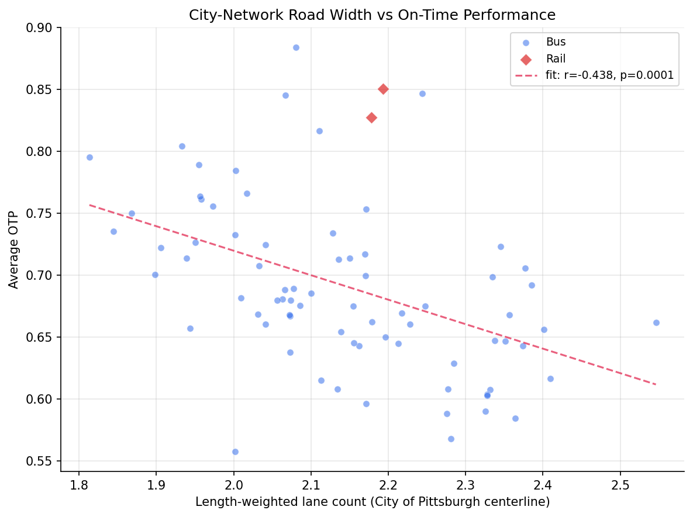
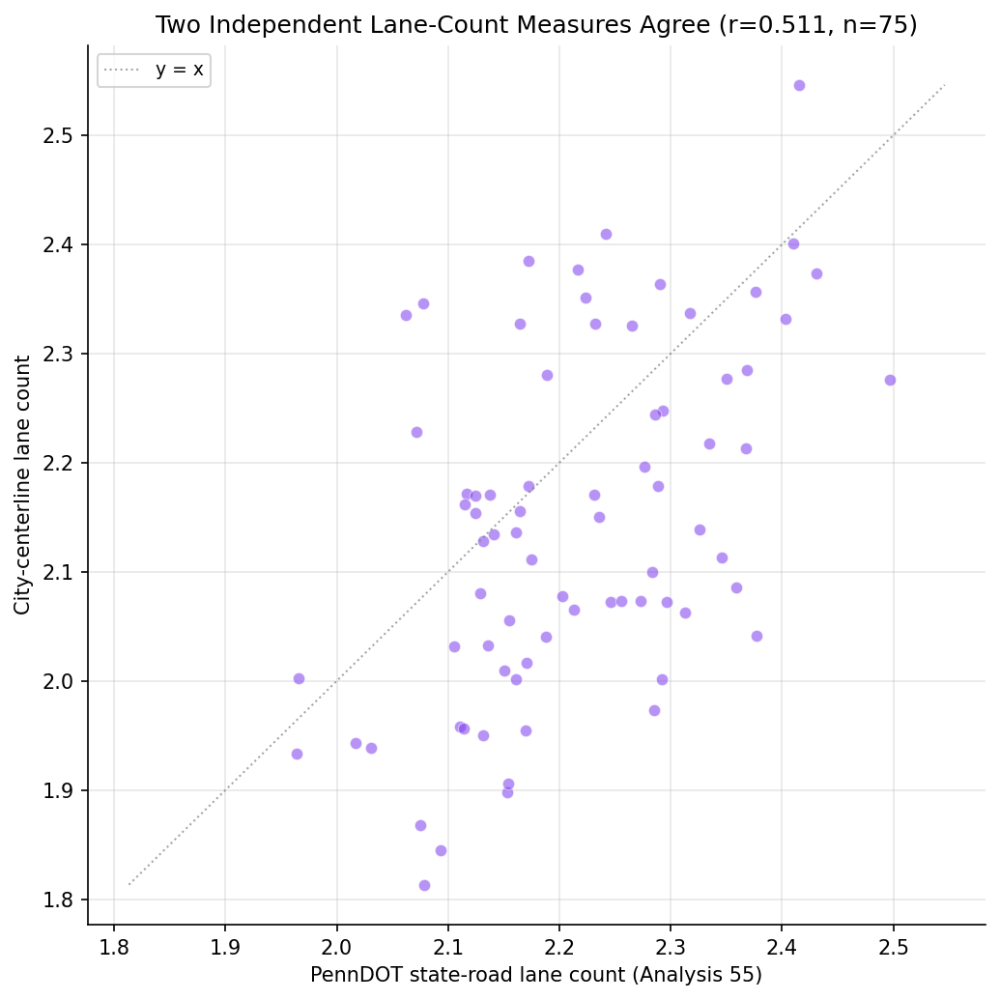
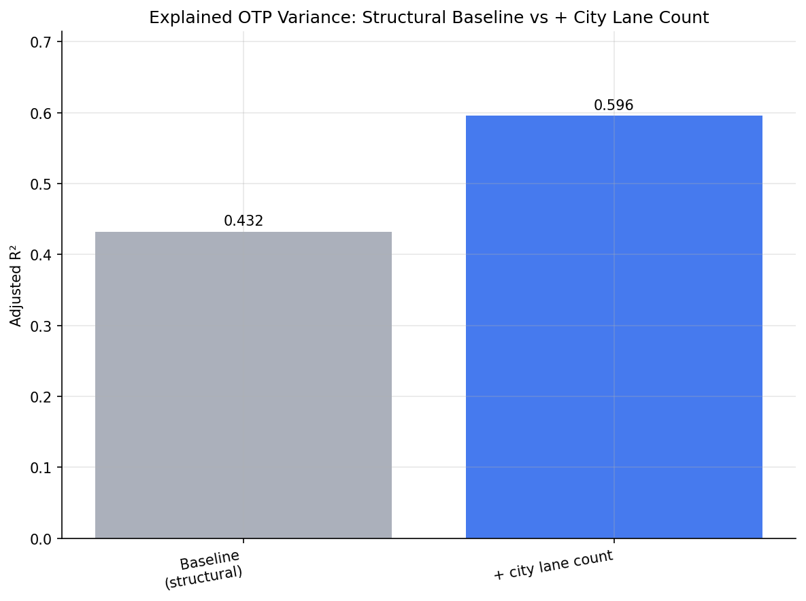
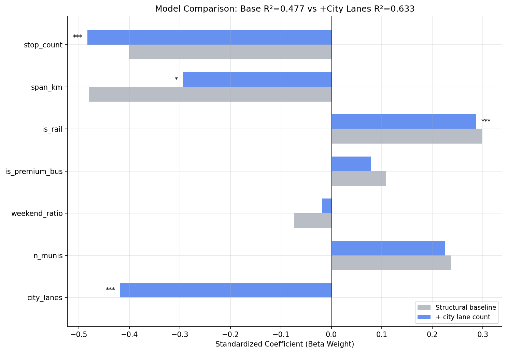

Analysis
56 - City Centerline and OTP
Coverage: 2019-01 to 2025-11 (from otp_monthly).
Built 2026-06-15 11:52 UTC · Commit e5cf673
Page Navigation
Analysis Navigation
Data Provenance
flowchart LR
56_city_centerline_otp(["56 - City Centerline and OTP"])
t_otp_monthly[("otp_monthly")] --> 56_city_centerline_otp
01_data_ingestion[["Data Ingestion"]] --> t_otp_monthly
u1_01_data_ingestion[/"data/routes_by_month.csv"/] --> 01_data_ingestion
u2_01_data_ingestion[/"data/PRT_Current_Routes_Full_System_de0e48fcbed24ebc8b0d933e47b56682.csv"/] --> 01_data_ingestion
u3_01_data_ingestion[/"data/Transit_stops_(current)_by_route_e040ee029227468ebf9d217402a82fa9.csv"/] --> 01_data_ingestion
u4_01_data_ingestion[/"data/PRT_Stop_Reference_Lookup_Table.csv"/] --> 01_data_ingestion
u5_01_data_ingestion[/"data/average-ridership/12bb84ed-397e-435c-8d1b-8ce543108698.csv"/] --> 01_data_ingestion
t_route_road_city[("route_road_city")] --> 56_city_centerline_otp
13_city_centerline[["City Centerline Overlay ETL"]] --> t_route_road_city
u1_13_city_centerline[/"data/pgh-centerline/centerline_raw.geojson"/] --> 13_city_centerline
u2_13_city_centerline[/"data/GTFS/shapes.txt"/] --> 13_city_centerline
u3_13_city_centerline[/"data/GTFS/trips.txt"/] --> 13_city_centerline
u4_13_city_centerline{"City of Pittsburgh Street Centerline (ArcGIS Hub)"} --> 13_city_centerline
t_route_road_class[("route_road_class")] --> 56_city_centerline_otp
12_road_classification[["Road Classification Overlay ETL"]] --> t_route_road_class
u1_12_road_classification[/"data/penndot-roadclass/roadwaysegments.json"/] --> 12_road_classification
u2_12_road_classification[/"data/penndot-roadclass/roadwayadmin.json"/] --> 12_road_classification
u3_12_road_classification[/"data/GTFS/shapes.txt"/] --> 12_road_classification
u4_12_road_classification[/"data/GTFS/trips.txt"/] --> 12_road_classification
u5_12_road_classification{"PennDOT ArcGIS Roadway Segments Layer (RMSSEG)"} --> 12_road_classification
u6_12_road_classification{"PennDOT ArcGIS Roadway Admin Layer"} --> 12_road_classification
t_route_stops[("route_stops")] --> 56_city_centerline_otp
01_data_ingestion[["Data Ingestion"]] --> t_route_stops
t_stops[("stops")] --> 56_city_centerline_otp
01_data_ingestion[["Data Ingestion"]] --> t_stops
t_routes[("routes")] --> 56_city_centerline_otp
01_data_ingestion[["Data Ingestion"]] --> t_routes
d1_56_city_centerline_otp(("analyses/55_road_classification_otp (lib)")) --> 56_city_centerline_otp
classDef page fill:#dbeafe,stroke:#1d4ed8,color:#1e3a8a,stroke-width:2px;
classDef table fill:#ecfeff,stroke:#0e7490,color:#164e63;
classDef dep fill:#fff7ed,stroke:#c2410c,color:#7c2d12,stroke-dasharray: 4 2;
classDef file fill:#eef2ff,stroke:#6366f1,color:#3730a3;
classDef api fill:#f0fdf4,stroke:#16a34a,color:#14532d;
classDef pipeline fill:#f5f3ff,stroke:#7c3aed,color:#4c1d95;
class 56_city_centerline_otp page;
class t_otp_monthly,t_route_road_city,t_route_road_class,t_route_stops,t_routes,t_stops table;
class d1_56_city_centerline_otp dep;
class u1_01_data_ingestion,u1_12_road_classification,u1_13_city_centerline,u2_01_data_ingestion,u2_12_road_classification,u2_13_city_centerline,u3_01_data_ingestion,u3_12_road_classification,u3_13_city_centerline,u4_01_data_ingestion,u4_12_road_classification,u5_01_data_ingestion file;
class u4_13_city_centerline,u5_12_road_classification,u6_12_road_classification api;
class 01_data_ingestion,12_road_classification,13_city_centerline pipeline;
Findings
Findings: City Centerline and OTP
Summary
Analysis 55 found that buses on wider, multi-lane roads run late more often, using PennDOT's state-road inventory. This analysis re-tests that finding with a fully independent dataset -- the City of Pittsburgh street centerline, which counts lanes on the entire city street network, local streets included -- and the result holds almost exactly. City-network lane count correlates with OTP at r = -0.44 (vs PennDOT's -0.47), and adding it to the structural baseline lifts explained variance from 43% to 60% (a +0.16 jump in adjusted R², F = 29.4, p < 0.0001). Two lane-count measures built from different agencies' data, by different methods, point to the same conclusion: road width is a real, robust correlate of on-time performance, not an artifact of which roads PennDOT happens to inventory.
Key Numbers
- City lane count vs OTP: r = -0.438 (p = 0.0001, n = 77 routes). Analysis 55 PennDOT: r = -0.470.
- Regression gain: adjusted R² 0.432 -> 0.596 (+0.164) when city lane count is added to the 6-feature structural baseline. Nested F = 29.4, p < 0.0001.
- City lane count beta weight: -0.418 (p < 0.0001) -- the largest standardized effect in the augmented model, comparable to stop count (-0.483) and span (-0.294).
- VIF for city lane count = 1.12 -- essentially no collinearity with the structural features; it carries independent information.
- Two measures agree: city vs PennDOT lane count correlate at r = +0.511 (n = 75); means 2.14 (city) vs 2.21 (PennDOT) lanes.
- Bus-only: adjusted R² 0.365 -> 0.549 when city lane count is added (F = 29.1, p < 0.0001).
- Coverage: 77 of 89 city-matched routes have match_rate >= 0.3; median within-city coverage 66%.
Observations
- The lane-count finding replicates on an independent dataset. The whole point of this analysis was to check whether Analysis 55's lane-count effect was an artifact of PennDOT's state-road selection. It is not: a different agency's inventory, covering a broader set of streets (including local roads PennDOT omits), produces a near-identical correlation and an even larger single-predictor R² gain.
- The two lane-count measures are related but not identical (r = +0.51), yet both predict OTP about equally. If the effect were a measurement artifact, the two differently-built measures would not agree this consistently on direction and magnitude. Their partial agreement (city lanes fold in local 1-2 lane streets, lowering the mean slightly from 2.21 to 2.14) is what we would expect from two honest measures of the same underlying road width.
- Coverage expansion turned out modest. The original phase-2 hope was that the city centerline would fill in routes PennDOT misses. In practice it added only ~2 such routes: city routes spend roughly half their length outside Pittsburgh limits (median within-city coverage 66%), where the centerline does not reach. The analysis's value is robustness, not coverage.
- One-way share and limited-access (freeway) share show no association with OTP (r = +0.03 and +0.01, both n.s.). Lane count alone carries the road-width signal, consistent with Analysis 55, where lane count dominated functional class and posted speed.
Caveats
- Area-level (ecological) association. This is a route-level relationship between the roads a route runs along and its aggregate OTP. It does not establish that any individual trip is late because of a wide road; lane count co-varies with downtown/arterial operating environments, signal density, and traffic that are not all separately controlled here.
- City-limits coverage only. The centerline covers City of Pittsburgh streets, so suburban portions of routes are unmeasured. Routes are included only when at least 30% of their shape matches a city street; 12 low-coverage routes were excluded. The lane metric describes each route's within-city roads.
- CFCC functional class is not usable here. The dataset's Census Feature Class Codes are largely degenerate (A3* lumps ~88% of streets), so functional class was not used as a predictor. Only lane count and the A1* limited-access flag were derived.
- Lane count
0/null treated as missing. ~8% of segments lack a usable lane count; these are dropped from the length-weighted mean rather than counted as zero-lane roads. - Not a causal or independent corroboration of magnitude. Because city and PennDOT lane counts are correlated (r = 0.51), this is a robustness check on the existence and direction of the effect, not a fully independent second estimate of its size.
Validation
Data inputs
- Data source verified.
route_road_citycolumns checked againstprt_otp_analysis.common.schemas.ROUTE_ROAD_CITYand validated at load (validate(..., subset=True)). Centerline fields (no_lanes,cfcc,oneway) confirmed against the live ArcGIS service before building (seedata/pgh-centerline/SOURCE.md). - Geographic/temporal scope matches. OTP averaged over routes with 12+ months; lane metrics matched to the same GTFS route shapes used throughout the project (30 m buffer, identical KDTree machinery as Analyses 27/55). City-limits coverage limitation documented.
- Null/missing handling. Lane count
0and null treated as missing in the length-weighted mean (not as zero-lane roads). Routes with match_rate < 0.3 excluded, not imputed.
Results plausibility
- Aggregates sanity-checked. Mean lane count 2.14 (city) is consistent with a predominantly 1-2-lane urban street network and sits just below PennDOT's 2.21 (state roads skew wider), exactly as expected when local streets are folded in.
- Surprising results investigated. The result is not surprising -- it confirms Analysis 55 with an independent dataset, which was the goal. The direction (more lanes -> lower OTP) matches the established finding.
- Direction of effects checked. Negative lane-count -> OTP slope reproduces Analysis 55; rail dummy positive; stop count and span negative -- all consistent with prior structural models.
Statistical diagnostics
- Multicollinearity checked. VIF reported for all predictors; max is span_km at 3.66. City lane count VIF = 1.12. No predictor exceeds 5.
- Small-sample routes flagged. Minimum 12 months of OTP and match_rate >= 0.3 enforced; n = 77 routes (75 bus, 2 rail). The 2-route rail subset is noted, not over-interpreted.
- Ecological framing. Results described as route/area-level associations throughout; no individual-trip causal claim is made.
Output

city-network lane count vs on-time performance, with fit line.

agreement between city-centerline and PennDOT state-road lane counts.

adjusted R-squared, structural baseline vs adding city lane count.

standardized coefficients, baseline vs augmented model.
No interactive outputs declared.
regression results for baseline, augmented, and bus-only models.
Preview CSV
variance inflation factors for the augmented model.
Preview CSV
per-route city vs PennDOT lane metrics with OTP.
Preview CSV
Methods
Methods: City Centerline and OTP
Question
Analysis 55 found that lane count is the strongest road-type predictor of OTP (r = -0.47), but it was computed only over PennDOT state roads -- the major, arterial portion of each route. Two concerns follow: (1) is the lane-count signal a real road-width effect, or an artifact of which segments PennDOT happens to inventory? (2) does it hold on the broader street network, including the local 1-2 lane streets that state-road data omits? This analysis answers both by recomputing route lane count from a fully independent dataset -- the City of Pittsburgh street centerline -- and re-testing it against OTP.
This is primarily a robustness / cross-validation analysis, not a coverage-expansion one: the city centerline matches almost the same routes PennDOT does (the centerline is city-limits-only, so suburban route segments are uncovered), but it measures lane count a completely different way, from a different agency's inventory of a broader set of streets.
Approach
- Build
route_road_city(pipeline step 13): for each route, the length-weighted mean lane count of city street segments within 30 m of its GTFS shape, plus one-way share and limited-access (freeway, CFCCA1*) share. Lane count0/null is treated as missing. Match rate records the within-buffer (≈ within-city) fraction of the route. - Include routes with 12+ months of OTP and
route_road_city.match_rate >= 0.3. - Bivariate: correlate city-network lane count with OTP, and compare against Analysis 55's PennDOT lane-count correlation.
- Head-to-head: for routes matched by both datasets, compare the city vs PennDOT lane count (means and Pearson r) to show they are related but distinct measures.
- Regression: replicate the Analysis 18/55 six-feature structural OLS baseline on the city-matched sample, then add city lane count and test the improvement with a nested F-test. Compute VIF for the augmented model and flag any predictor with VIF > 5.
- Report one-way share and limited-access share descriptively (Pearson r with OTP).
- Repeat the base-vs-lanes comparison on the bus-only subset.
The CFCC functional-class codes in this dataset are largely degenerate (A3* lumps ~88% of streets), so functional class is not used as a predictor; lane count carries the road-width signal, consistent with Analysis 55 where lane count dominated.
All regression helpers (compute_span, fit_ols, compute_vif, f_test_nested) are
replicated locally so the analysis does not import from Analysis 18/55 (analyses must be
independent).
Data
| Name | Description | Source |
|---|---|---|
otp_monthly |
route_id, month, otp (averaged to route level, 12+ months required) | prt.db table |
route_road_city |
route_id, weighted_lanes, oneway_share, limited_access_share, match_rate (built by road_overlay_city.py, pipeline step 13) |
prt.db table |
route_road_class |
route_id, weighted_lanes (PennDOT, for head-to-head comparison) | prt.db table |
route_stops |
stop counts, trip frequencies | prt.db table |
stops |
lat, lon for geographic span; muni for municipality count | prt.db table |
routes |
route_id, mode for subtype classification | prt.db table |
Inclusion: routes with 12+ months of OTP and route_road_city.match_rate >= 0.3.
Lane count is length-weighted over the City of Pittsburgh centerline segments within 30 m
of the route's GTFS shape. Because the centerline is city-limits-only, routes that run
into the suburbs are only partially covered; the match rate quantifies the covered share.
Output
output/model_comparison.csv-- regression results (base vs + city lanes, bus subset)output/vif_table.csv-- VIF values for the augmented modeloutput/route_road_city_summary.csv-- per-route city vs PennDOT lane metrics with OTPoutput/city_lanes_vs_otp.png-- bivariate scatter of city lane count vs OTPoutput/city_vs_penndot_lanes.png-- city vs PennDOT lane count agreement scatteroutput/r2_progression.png-- adjusted R² baseline vs + city lanesoutput/coefficient_comparison.png-- beta-weight comparison, base vs augmented model
Source Code
|
Sources
| Name | Type | Why It Matters | Owner | Freshness | Caveat |
|---|---|---|---|---|---|
| otp_monthly | table | Primary analytical table used in this page's computations. | Produced by Data Ingestion. | Updated when the producing pipeline step is rerun. | Coverage depends on upstream source availability and ETL assumptions. |
Upstream sources (5)
|
|||||
| route_road_city | table | Primary analytical table used in this page's computations. | Produced by City Centerline Overlay ETL. | Updated when the producing pipeline step is rerun. | Coverage depends on upstream source availability and ETL assumptions. |
Upstream sources (4)
|
|||||
| route_road_class | table | Primary analytical table used in this page's computations. | Produced by Road Classification Overlay ETL. | Updated when the producing pipeline step is rerun. | Coverage depends on upstream source availability and ETL assumptions. |
Upstream sources (6)
|
|||||
| route_stops | table | Primary analytical table used in this page's computations. | Produced by Data Ingestion. | Updated when the producing pipeline step is rerun. | Coverage depends on upstream source availability and ETL assumptions. |
Upstream sources (5)
|
|||||
| stops | table | Primary analytical table used in this page's computations. | Produced by Data Ingestion. | Updated when the producing pipeline step is rerun. | Coverage depends on upstream source availability and ETL assumptions. |
Upstream sources (5)
|
|||||
| routes | table | Primary analytical table used in this page's computations. | Produced by Data Ingestion. | Updated when the producing pipeline step is rerun. | Coverage depends on upstream source availability and ETL assumptions. |
Upstream sources (5)
|
|||||
| analyses/55_road_classification_otp | dependency | Runtime dependency required for this page's pipeline or analysis code. | Open-source Python ecosystem maintainers. | Version pinned by project environment until dependency updates are applied. | Library updates may change behavior or defaults. |